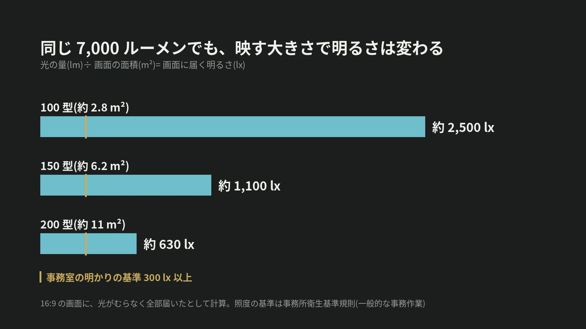

LOTUS VISUAL JOURNAL / 現場の裏側 #24
プロジェクターは「ルーメン」、
LED は「カンデラ」。
明るさの数字を比べる前に
結論から。2 つの数字は、測っている物が違います。ルーメンは機材から出る光の量。カンデラ毎平方メートルは、画面の表面の明るさです。
プロジェクターの画面がどれだけ明るく見えるかは、映す大きさと、部屋の明かりで変わります。
01 / THREE UNITS出る量、届く量、見える明るさ
国際単位系(SI)で、光の単位のおおもとはカンデラ(cd)です。ある方向へ出る光の強さ(光度)の単位で、7 つある基本単位の 1 つ。ここから 2 つの単位が組み立てられています。
ルーメン(lm)は、光源から出る光の量(光束)。ルクス(lx)は、面に届く光の量(照度)で、1 m² あたり何ルーメン届くかを表します。そしてもう 1 つ、面そのものがどれだけ明るく見えるか(輝度)を表すのが、カンデラ毎平方メートル(cd/m²)です。
プロジェクターの仕様書に書かれているのは「出る量」。LED の画面の仕様書に書かれているのは「見える明るさ」。だから、そのままでは比べられません。
02 / SAME LUMENS同じ 7,000 ルーメンでも
プロジェクターの画面の明るさは、割り算で見当がつきます。出る光の量(lm)を、映す画面の面積(m²)で割ると、画面に届く明るさ(lx)になります。
当サイトの機材ガイドに載せている 7,000 lm のプロジェクターを例にします。100 型(16:9、約 2.8 m²)に映すと、約 2,500 lx。200 型(約 11 m²)に映すと、約 630 lx。画面の幅を 2 倍にすると面積は 4 倍になり、明るさは 4 分の 1 になります。
7,000 lm ÷ 2.76 m² ≒ 2,540 lx(100 型)。7,000 lm ÷ 11.03 m² ≒ 635 lx(200 型)。「何ルーメンあれば足りるか」は、映す大きさを決めないと答えが出ません。
03 / ROOM LIGHT部屋の明かりが「黒」を決める
もう 1 つの相手が、部屋の明かりです。厚生労働省の事務所衛生基準規則は、一般的な事務作業をする作業面の照度を 300 lx 以上と定めています(2022 年 12 月 1 日から。それまでは 150 lx 以上)。明かりをつけたままの会議室では、それに近い光がスクリーンにも当たりえます。
プロジェクターは「黒」を映せません。黒い部分は、光を当てていない部分です。だから、部屋の明かりがそのまま黒の明るさになります。仮にスクリーンへ 300 lx の明かりが当たっているとすると、200 型・7,000 lm の画面は、白い部分が 630 + 300 = 930 lx、黒い部分が 300 lx。その比はおよそ 3 対 1 です。明かりを 30 lx まで落とせば、660 対 30 で、22 対 1 になります。
04 / SIDE BY SIDELED の数字と並べるには
LED の画面は、自分で光ります。仕様書の明るさは cd/m² で書かれています。プロジェクターの画面を同じ物差しに直すには、建築の照明計算で使う式が使えます。どの方向から見ても同じ明るさに見える、つやのない面では、「輝度 = 照度 × 反射率 ÷ π」。
反射率を 1 とすると、630 lx が届く 200 型の画面は約 200 cd/m²、2,500 lx が届く 100 型の画面は約 800 cd/m²。この数字なら、LED の仕様書の cd/m² と横に並べられます。
もう 1 つの違いは、大きくしたときです。LED はパネルを足して画面を広げるので、広げても 1 m² あたりの明るさは変わりません。プロジェクターは、同じ光を広い面に分けるので、広げるほど暗くなります。
05 / ON SITELOTUS VISUAL へのご相談では
LOTUS VISUAL へのご相談では
プロジェクターにするか、LED にするか。ご相談では、機種の前に 4 つをうかがいます。画面の大きさ。部屋の明かりを消せるか、窓や舞台の照明がスクリーンに当たるか。映す物が文字の多い資料か、映像か。いちばん遠い席からの距離。
この 4 つが決まると、必要な明るさを数字で比べられます。数字の裏付けがないまま「明るいので大丈夫です」とは言いません。
06 / TAKEAWAY今日の持ち帰り
今日の持ち帰り
- ルーメンは「出る量」、cd/m² は「見える明るさ」。測っている物が違うので、そのままでは比べられない。
- プロジェクターは、面積で割る。7,000 lm は 100 型で約 2,500 lx、200 型で約 630 lx。幅が 2 倍なら明るさは 4 分の 1。
- 黒を決めるのは、部屋の明かり。スクリーンに当たる明かりを減らすと、白と黒の差が開く。
出典:国際度量衡局「国際単位系(SI)第 9 版(2019)要約 日本語版」(産業技術総合研究所 計量標準総合センターの冊子に収録。カンデラ・ルーメン・ルクスの関係)、厚生労働省「事務所衛生基準規則及び労働安全衛生規則の一部を改正する省令」(事務室の照度の基準。照度の部分は令和 4 年 12 月 1 日施行)、熊本県立大学 環境共生学部の講義資料「視覚/照度と輝度」(2022 年。均等拡散面の輝度の式)。画面に届く明るさは、16:9 の画面に光がむらなく届いたとして計算した値です。